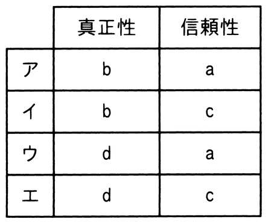

JIS Q 27000:2019（情報セキュリティマネジメントシステム−用語）における真正性及び信頼性に対する定義a〜dの組みのうち，適切なものはどれか。
〔定義〕
a 意図する行動と結果とが一貫しているという特性
b エンティティは，それが主張するとおりのものであるという特性
c 認可されたエンティティが要求したときに，アクセス及び使用が可能であるという特性
d 認可されていない個人，エンティティ又はプロセスに対して，情報を使用させず，また，開示しないという特性
